| 元メガバンク為替ディーラーが教えるFX超入門講座 | |
| 鈴木拓也 | |
| Hitotsuku Publication (2018) | |
鈴木拓也
突然ですが、「人生の３大費用」って何でしょう？
結婚・出産・旅行？
いえいえ、正解は、子供の養育費、住宅購入費、老後の生活費です。
「そんな事知って何の役に立つの？」と思ったあなた！ 危険です！
実はこれ、２０１６年に「金融広報中央委員会」という組織が、国民の「金融リテラシー」を調べるために使用した問題なのです。
調査は２万５千人を対象に５題出題されたのですが、このクイズの正当率が高ければ高い程、年収が高くなるという調査結果が出ました。
「人生の３大費用なんてどうでもいい」と思っているあなた！ 満足いく収入を得ていますか？
調査結果がそのまま当てはまるとすれば、収入は決して高くないはずです。
無理もありません。
日本人は諸外国の人に比べて「金融リテラシー」が低いとされているからです。学校でお金の話なんて教えてくれませんし、社会に出ても誰も教えてくれません。親も、「勉強しなさい」「就職しなさい」「貯金をしなさい」くらいしか言いません。
お金について誰も教えてくれないので、「金融リテラシー」が高いはずがないのです。
しかし、世の中には自分で勉強して「金融リテラシー」を高めている人がいます。
「勝ち組」と言われるお金持ちです。
そういった人達の中には何か事業に成功した人もいますが、一見すると普通のサラリーマンですが、実はお金持ちという人もたくさんいます。
彼等は何か特別な才能があるわけではなく、他の人より、お金の知識をたくさん持っているだけの場合が多々あります。つまり「金融リテラシー」が高いのです。
お金が人生の全てではありませんが、ちょっとした知識を得るだけでお金は増やせますし、人生を豊かにすることが可能なのです。
「金融リテラシー」と言うと何かとても難しそうに聞こえますが、要はお金の正しい使い方、増やし方を知っているかどうかだけです。
クイズに出てきた「人生の３大費用」を知っていれば、どのタイミングでお金が出ていき、どのような選択をすべきか、そして、それまでにどれだけのお金を用意しないといけないか、という計画を立てることができます。
例えば家を買う時、買うか賃貸にすべきかどうか、頭金をいくら出すかは、将来のお金の自由度を大きく左右します。そういった場面で、自分に合った選択肢ができるかどうかで生活の豊かさは大きく変わってきます。
お金についての知識を知っているか知らないかで、お金に追われるか、自由に使えるかが変わってくるのです。
本書では、生活を少しでも豊かにしたいと思っているあなたに、お金の知識と、お金の増やし方について詳しく紹介していきます。
私にもお金に苦しい時期はありましたが、お金を稼げるようになった今になって言えることは、お金持ちと貧乏の差は、「お金についての知識を知って、その上で行動しているかどうか」だということです。
私は、今まで色々な方にお金の稼ぎ方について教えていただきました。今度は私が世間にお返しをしなければと思っています。
お金を稼ぐ知識というのは、他人に教えて減るものではありません。
だから私はできるだけ詳しくノウハウをお伝えし、その上で、ひとりでも多くの人が実行に移していただければと思っています。
是非あなたも、お金の束縛から解き放たれてください。
遅くなりましたが、ここで私のプロフィールについて少しだけ紹介したいと思います。
私は静岡県の出身で、明治大学理工学部卒業、東京工業大学大学院修士課程修了（電子工学専攻）という学歴です。
理系出身ですが、金融に興味があったことから大手メガバンクに入行し、本店及び香港支店にて為替ディーラー業務を経験後、投資家兼起業家として独立しました。
また、銀行在籍中に、証券アナリストの資格も取得しており、現在は、少しでも多くの人に投資のすばらしさを伝えて、お金に困らない人生を歩んでほしいと願って金融投資教育の活動をしています。
世の中には、素人同然の人がお金欲しさに講師をしている怪しげなセミナーが、多々存在しています。
しかし、そんなセミナーを受けても、成功することはまずあり得ません。
お金を稼ぐことも、投資をするということも、そんなに簡単なことではありません。
私はプロとして投資をしていますので、お金を稼ぐことの難しさを重々承知しています。
だからこそ、中途半端なことをお伝えするつもりはありませんし、「誰でも簡単に稼げます」なんて甘いことは決して言いません。
ただ、金融リテラシーを自ら高める努力をされた方の中には、サラリーマンにして投資で月収１００万円以上を稼いでいる人も大勢いますし、給与所得とは別で、数千万円の資産を築いた方も普通にいます。
この書籍では、お金を稼ぐことの難しさもお伝えしますし、その上で成功できるノウハウを伝授できればと思っていますので、あなたが投資への第一歩を踏み出す手助けになれば幸いです。
あなたは、お金について真剣に考えたことがありますか？
将来、ローンを組んで家を買う時、子供が産まれて生活費が増えた時、退職して収入が無くなった時。
お金にまつわる判断をしなければいけない人生のタイミングは、たくさんあります。
そのタイミングで適切に判断できるかどうか。
これによって、お金の余裕は変わってきます。
判断を間違えると、貧乏な生活を送らないといけないし、正しく判断できれば豊かな生活を送ることができます
。
あなたは普段お金の話をしますか？
ほとんどの場合は「ＮＯ」だと思います。
なんとなく、お金持ちになりたいと思っていても、真剣にお金の話をする事は少ないはずです。
そもそも、お金の話をすること自体、なんとなく嫌悪感を抱いているかもしれません。
日本では、真面目に汗水垂らして働いて、会社から給料をいただき、そのお金で質素に暮らすことを美徳とする風習があります。
もちろん、汗水垂らして働くことはすばらしいことです。それを否定するつもりはありません。
しかし、多くの人が、会社から貰う給料だけでは満足できていない現状があります。
昇給はしないし、ボーナスも満足に貰えません。
そんな時代に、ただ会社を信じて働き続けること時代が、無謀な挑戦だと私は思うのです。
だからこそ、お金について知識を得ることが重要です。
同じお金を貰っても、お金の知識があるかないかで、豊かさが変わります。ローンは固定ローンがいいのか、変動ローンがいいのかの判断が変わるだけで、将来に払うお金は変わってきます。
お金の知識を得るだけで、同じ所得でも、豊かになったり貧乏になったりする
のです。
「金融リテラシー」を高めるということは、賢く生きるということです。
逆に「金融リテラシー」が低いということは、お金について損をしながら生きるということです。
であれば、「金融リテラシー」を高めて、少しでも豊かに生きるべきではありませんか？
そんなに難しいことではありません。
少し勉強するだけで、お金の知識というのは十分に身に付きます。
それでも多くの人は、お金について勉強することは抵抗があるのではないでしょうか。
無理もありません。周りにお金の勉強をしている人が少ないからです。
友達とお金の話をすることなんて無いでしょう。
しかし、海外ではお金の話は普通に会話に出てきます。
海外は、日本に比べて「金融リテラシー」が高いという調査も出ています。
お金についての教育が十分に行われているのです。
実際に、私が駐在していた香港では、日本と比較にならないくらいお金に対する意識が高く、電車の中で若者はスマホでゲームではなく株価や為替レートをチェックしていたり、普通にお金に関する議論を交わしていたりと、意識の違いが見受けられました。
では、なぜ日本人だけ金融リテラシーが低いのでしょうか。
日本人の金融リテラシーの低さは、学校で十分な教育がされていないからだと言われています。
あなたも、学校でお金の話を聞いたことは、ほとんど無いのではないでしょうか？
日本の教育は高度経済成長期の時代のままですから、お金の話は出てこないのです。
高度経済成長期の時代に生きた人は、会社に行くだけで十分な給料がもらえましたし、年金も十分に支払われたので、生活に何の問題も生じませんでした。銀行にお金を預けるだけでお金が増えた時代です。貯金をすることが、お金を増やす正しい方法でした。
その時代に必要とされる人間とは、勤勉でマニュアルを教えられた通り実行するような人です。
毎日遅刻せずに休まず会社に出勤する人が、いい人材とされていたのです。
そんな時代に、お金について教育する必要が無かったのです。
頑張って会社に行けば報われたのです。
しかし、今はどうでしょう。
給料は上がりませんし、銀行にお金を預けても増えません。年金も貰えないと思っておいた方がいいでしょう。
また、近い将来、ＡＩの発展にともない多くの仕事が機械に奪われると言われています。そんな状況の中、ただ何も将来について考えず真面目に働くことが善と考えている人間は、厳しい状況に置かれることは間違いないでしょう。
「会社に尽くしても自分は救われない」というみんなの気持ちが、「社畜」という言葉を生み出しました。
なんとなく、みんな将来に不安を抱いているし、会社に頼っていても意味が無いと感じているのです。
しかし、高度経済成長期と同じ教育を受けているので、勤勉に働くことが依然として正しいと思っています。
確かに真面目に働くことは重要ですが、ただそれだけでは豊かな生活は手に入りません
。
昔とは明らかに時代が違うのです。
真面目に働いているのに十分なお金が貰えないのですから、会社で働く以外に何か収入を得る方法を考えるべき
です。
あなたも知っているかもしれませんが、最近になって政府は「副業」を推奨しています
。
要は、１つの会社で働いても豊かにはなりませんよ。と政府が言っているのです。
そうでないと、わざわざ副業を勧めるわけがありません。勧められるなら、それが時代の流れなら、副業を始めない理由なんてありません。今すぐ始めるべきです。
しかし、いざ副業を始めるとなっても、何から始めていいのか悩むはずです。副業と言われて真っ先に思いつくのが、ＩＴに関する仕事ではないでしょうか。
自宅で働いて、メールで送信するような生活です。すごく魅力的な働き方ですが、現在ＩＴの仕事をしていない人にとってはハードルが高いです。
ＩＴ以外にも魅力的な副業はたくさんありますが、その中でおすすめしたいのが「投資」です。
「投資」は誰でもできますし、特別な才能が無くても、投資で着実に資産を増やしている人はたくさんいます
。
もちろん、あなたにだってできます。
サラリーマンでも主婦でも、学生でもできます。
働きながら、家事をしながら、勉強をしながら投資をすることが可能です。
会社のように決まった時間にする必要もありませんし、納期があるわけでもありません。
自分のタイミングで、自分が今持っている資産に合わせて投資をすることが可能
です。
投資というとすごく難しそうですが、実は昔の日本人はみんな投資をやっていました。
高度経済成長期には、銀行の利率が高かったので、銀行に預金することが投資になっていたのです。
日本人全員が、知らないうちに投資をしている時代だったのです。
今は、利率が低いので、銀行に預けておいてもお金は増えません。投資にはなり得ませんが、あなたが普段やっている「銀行にお金を預ける」という行動は、日本では昔「投資」になっていた
のです。
そう考えると、投資ってそんなに難しいことでは無いのではないでしょうか？
要は、今あるお金をどうやって運用すれば、将来自分が豊かになるか
を考えるだけです。
昔の日本では、銀行に預けるだけで知らないうちに投資になっていたので、誰も投資について考えていませんでしたし、学校でも教えてくれませんでした。
しかし、これからの時代、自分で財産を運用していく術を知らないと、豊かにはなれません
。
投資には、たくさん方法がありますが、その中で有名なものをいくつか紹介していきましょう。
あなたもＦＸや株式投資、不動産投資、仮想通貨など、名前は聞いたことがあるはずです。
どの投資を選んでも勝つことはできますが、始める時に多額のお金が必要なものや、今はやめておいた方がいい投資もありますので、それぞれの特徴について触れていきたいと思います。
まずは不動産投資
です。
不動産投資は、読んで字のごとく不動産に投資をする手法です。マンションなどの不動産を購入して家賃収入を得たり、不動産そのものの価値が上がることに期待したりする投資です。
不動産投資は手堅い投資と言われていて、安定的に収入を得ることが可能
ですが、始めるためには不動産を買うだけの資金が必要
です。
何千万円もの資金を用意する必要がありますし、不動産について相当の知識が無いと始めるのが難しい投資です。
不動産は、一度誰かが住むと価値が半分程度まで下がるのが通常ですし、定期的にメンテナンスをしないと誰も借りてくれなくなるので、収入が無くなります。
そのリスクを計算できるだけの知識があればいいですが、投資の初心者にはハードルがかなり高いと言えます。
しかも、日本の人口はどんどん少なくなってきています。
借り手が減っているのに、マンションだけはたくさんある状態です。その状態でマンションを買って借り手を探すことは、簡単なことではありません。
資金に余裕があればいいですが、はじめての投資には不向きと言えるでしょう。
続いては仮想通貨
です。
仮想通貨は、２０１７年に非常に利益が出た投資です。利益が出た時に始めることができればお勧めの投資ですが、今から始めてももう遅い
です。
価値が下がり続けているので、今投資しても資金を減らすだけです。
仮想通貨にはいくつかの種類があり、どの仮想通貨に投資をするかを決めなければいけません。「この通貨こそ将来的に世界共通の通貨になる」という期待から、２０１７年に数種類の仮想通貨が高騰するというブームが起きましたが、今は沈静化しています。
結局、誰もどれが世界共通の通貨になるかなんて分からないし、世界共通の通貨に投資できなかった時のリスクを考え始めたので、ブームが終わったのです。
こういった「もしかしたら価値が上がるかもしれない」というものにお金を出すことを、「投機」と言います
。
何か根拠があってお金を出す「投資」とは、種類が少し違います。
投機はギャンブルと似ていて、当たればリターンは大きいですが、ほとんどの人は負けます
。
計画的に資金を増やそうとするのであれば、「投機」ではなく「投資」をすべき
です。
続いては「投資」の代表格である、株式投資
についてです。
株式投資とは、会社が発行している株式に投資する手法です。
会社の業績が良ければ、株価が上がって利益を得ることができます。
会社の業績はある程度予想できるので、会社の将来性を考えて投資すると高い確率で利益を上げることができます
。
しかし、株は９時から15
時までしか取引できない
ので、サラリーマンにはやりにくい投資です。
株式投資を始めるには、ある程度のまとまった資金が必要ですし、会社には倒産するリスクがある
ことを忘れてはいけません。
ある日突然会社が倒産すると、１０００万円投資していても戻ってくるお金は０円です。
０円になるリスクがあっても特定の会社の将来性を信じたいという方には、向いているのかもしれませんが、賢明なあなたはそのリスクの大きさに懸念を抱いているはずです。
そこでおすすめしたいのがＦＸです。
まず、ＦＸは無くなることがありません
。
日本が発行している「円」に投資をするので、価値が暴落することもありませんし、倒産することもありません
。
もしＦＸが無くなるとすれば、日本が無くなる時ですから諦めもつくでしょう。
株式投資と違って投資する時間の制限もありませんから、
24
時間好きな時に取引が可能
です。
しかも、株式投資や不動産投資と違って、少額の資金から始めることができます
。
例えば10
万円しか資金がなくても、１００万円あるという仮定で取引することができます。10
万円投資して10
％
値上がりすると、１万円の利益しか出ませんが、１００万円あると仮定して取引できるので、１００万円の10
％
の10
万円が利益になります。
この制度を「レバレッジ」と言いますが、このレバレッジこそがＦＸの醍醐味です。日本の「円」という信用性のある通貨に、少額の資金で大きな利益を狙える取引。それがＦＸです
。
あなたがはじめて投資をするのであれば、ＦＸから始めることをおすすめします。
他の投資もメリットはたくさんありますが、はじめて投資をする人が手を出すには、ハードルが高すぎます。
どうしても別の投資をしたいという場合でも、まずはＦＸで資金を貯めてからでも遅くはありません
。
ＦＸで利益を上げられないようでは、他の投資が上手くいく可能性も低いと言えるでしょう。
他の投資に比べて、初期費用が低いので、もし万が一失敗してもダメージは低いですし、ＦＸを勉強することで、他の投資についての勉強にもなります
。
初心者にはＦＸが最適な投資と言えるでしょう。
ところで、ＦＸとはどういった投資でしょうか？
あなたも名前は知っているでしょうが、詳しくは知らないかもしれません。
そこで、ＦＸとは何か、どうやって稼げばいいのかについて詳しく紹介していきたいと思います。
ＦＸが何かを一言で言うと、「通貨に投資をする」ということです。
国によって扱う通貨が違うことは、あなたも知っているはずです。日本であれば「円」、アメリカであれば「ドル」、ヨーロッパであれば「ユーロ」というように、国によって使用している通貨は様々です。
そして、各国の発行する通貨の力関係は、一定ではなく常に変動しています。
その変動によって生じる差額で利益を得るのが、ＦＸです。
言葉で言っても難しいので、具体的な数字を使って説明していきたいと思います。
日本の「円」とアメリカの「ドル」の関係は「１ドル＝〇〇円」と表現されます。よくニュースで聞きますね。
「１ドル＝１００円」だったり「１ドル＝１２０円」だったり、為替レートは常に変動します。
では、「１ドル＝１００円」が「１ドル＝１２０円」になると、どのような影響があるでしょう。
例えば、海外でみかん１個が１ドルで売っていたとします。「１ドル＝１００円」だとすると、みかん１個は日本円で１００円です。
では、「１ドル＝１２０円」になるとどうでしょう。
１００円で買えたみかんが、１２０円出さないと買えなくなります。この状態が「円安」です。円の価値がドルに対して下がっている状態です。
逆に、「１ドル＝80
円」になった場合はどうでしょうか。
１００円出さないと買えなかったみかんが、80
円で買えるようになります。この状態が「円高」です。円の価値がドルに対して上がっている状態です。
このように、円とドルの力の関係が変わることで、同じ１ドルのみかんでも必要となる「円」は変わってきます。
では、今度はみかんを買わずにお金の交換だけを繰り返したとします。
まずは、１００円を「１ドル＝１００円」の時にドルに両替したとします。１ドルが手元にある状態です（図１）。
その後「１ドル＝１２０円」になった時にドルを売ると、手元に１２０円入ってきます。
最初の１００円が最終的に１２０円になったので、20
円の得です。
逆に、「１ドル＝80
円」になった時にドルを売ると、手元に80
円入ってきて20
円の損になります。
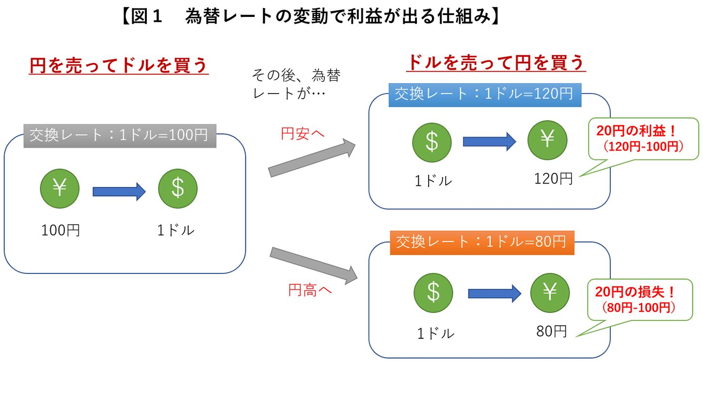
このように、為替レートが変動することを利用して、利益を得ようとする取引がＦＸ
なのです。
ここまで、１ドルや１００円などの小さなお金の話をしてきましたが、実際にお金を稼ごうとすると、もう少し大きなお金が必要です。１００円よりも１００万円ある方が、得られる利益が大きくなるのは当然です。
しかし、ＦＸを始める際に大きな資金があるとは限りません。
そこで利用したいのが、「レバレッジ」という制度です。
レバレッジは少額の資金でも、大きなお金を動かすことができる制度
です。
２０１８年９月現在、国内ＦＸ業者を使った場合、自分の持っている資金の25
倍ものお金を使って取引することが許されています
。
元手の１００万円をＦＸの口座に入金すると、最大２５００万円分の取引が可能になるのです。
つまり、為替が「１ドル＝１００円」から「１ドル＝１０１円」に１％
変動した場合、１００万円だと１万円の利益ですが、２５００万円分の取引が出来るので、25
万円もの利益が発生するのです。
株式取引でも、手持ち資金の３倍程度の取引が可能ですが、ＦＸは25
倍です。
いかにＦＸのレバレッジが優れているかが分かります。
初心者のうちは、レバレッジをかけずに利益を上げる技術を習得し、慣れてきたらレバレッジを徐々に上げて大きな利益を上げる、といった使い方ができるのです。
レバレッジはＦＸ最大の特徴と言えますが、もう１つ株式投資よりも優れているところがあります。
株式取引は、９時から11
時半、12
時半から15
時までしか取引できないのに対して、ＦＸは24
時間取引可能
です。
株式取引は、サラリーマンがちょうど働いている時間帯にしか取引することができません。
しかしＦＸは24
時間取引可能ですから、職種が何であろうと、自分の好きな時間帯での取引が可能なのです。
株式取引をしているサラリーマンは、勤務中にコソコソと取引をしたり、朝出勤する前に取引の「予約」をしたりするのですが、そんな片手間で利益を得ることは至難の業です。
じっくり自分の空いている時間に取引をすることで、勝率は高めることができます。
また、ＦＸの為替レートが一番動く時間帯は、日本の昼間の時間帯ではなく、欧米時間です。つまり、16
時頃から深夜までが一番活発に為替の取引が行われる時間帯なので、昼間は忙しいサラリーマンの方でも大いに稼ぐチャンスがあるのです。
本気でお金を増やしたいと思っているのであれば、レバレッジを活用することで手持ち資金の25
倍のお金が動かせて、24
時間いつでも取引が可能なＦＸ取引は、非常に魅力的な投資
と言えるのではないでしょうか。
ここまで、ＦＸの魅力について紹介してきましたが、ＦＸ取引をしたいと思ってもすぐに利益が出せるようになるわけではありません。
ＦＸ取引をする上で前提の知識となる「ローソク足」と「チャート」について、解説していきたいと思います。
「１ドル＝１００円」だとか、「１ドル＝１２０円」だとかは、誰かが勝手に決めているわけではありません。
例えば、パン屋が１２０円でパンを売りたいと思っていても、売れなければ値下げしなければなりません。それが１１０円なのか、１００円なのかは分かりませんが、売る人と買う人のバランスが取れたところで、物の値段は決まるはずです。
通貨の価値も、同じ原理で値段が決まります。「１ドル＝１００円」で取引したいと思っている人や、「１ドル＝１２０円」で取引したいと思っている人がいるなかで、ちょうどバランスがとれるところで為替レートは決まります。
そしてそれは、常に変動していきます。今は「１ドル＝１００円」でも、１分後は「１ドル＝１０１円」になっているかもしれません。
そういったレートの変動具合をグラフに表したのが、「チャート」
です（図２）。チャートを見ていると相場の流れが分かりますし、よく観察すると、流れが変わる時に「サイン」が出ている
ことがわかります。
サインについて詳しくはまた後で紹介しますが、このチャートによって、買ったり売ったりするタイミングを把握するのです。
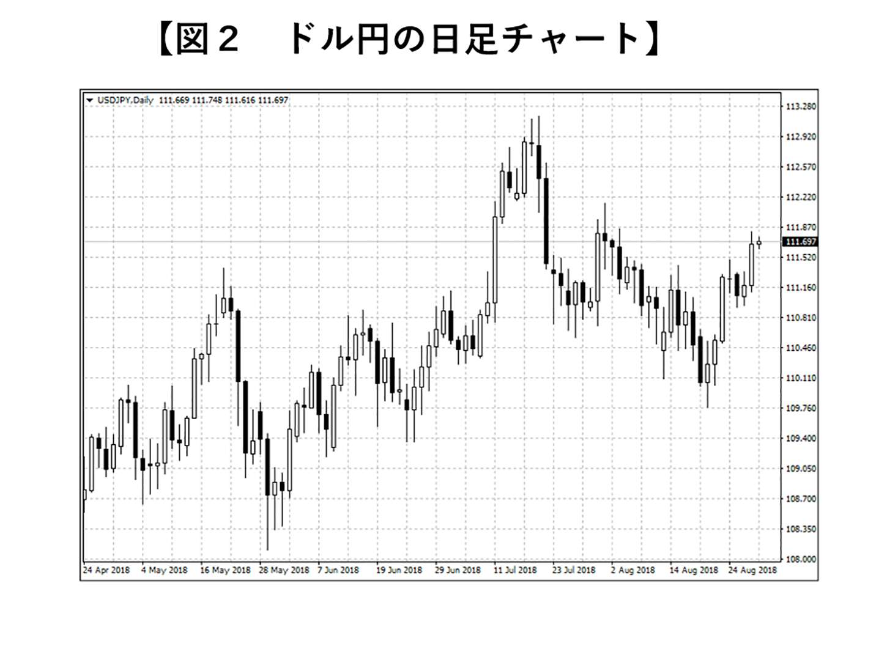
このチャートは、白色や黒色で塗られた長方形の集まりで構成されています。
この長方形が、「ローソク足」です
為替の動きは本来１本の曲線で描けるのですが、分析を簡単にするためにローソク足が使われます。
ローソク足は、一定の時間にどれだけの為替レートの変動があったか
を表しています（図３）。
陽線と陰線があり、陽線は「始値より終値が高い」ことを表しています。例えば「１ドル＝１００円で始まって、１ドル＝１１０円」で終われば陽線で表現します。
その間に「１ドル＝90
円」と安い時間があった場合は、下に「ヒゲ」が出ますし、逆に「１ドル＝１２０円」と高い時間があれば、上に「ヒゲ」が発生します。
陰線は、陽線の逆で、「始値より終値が低い」ことを表しています。
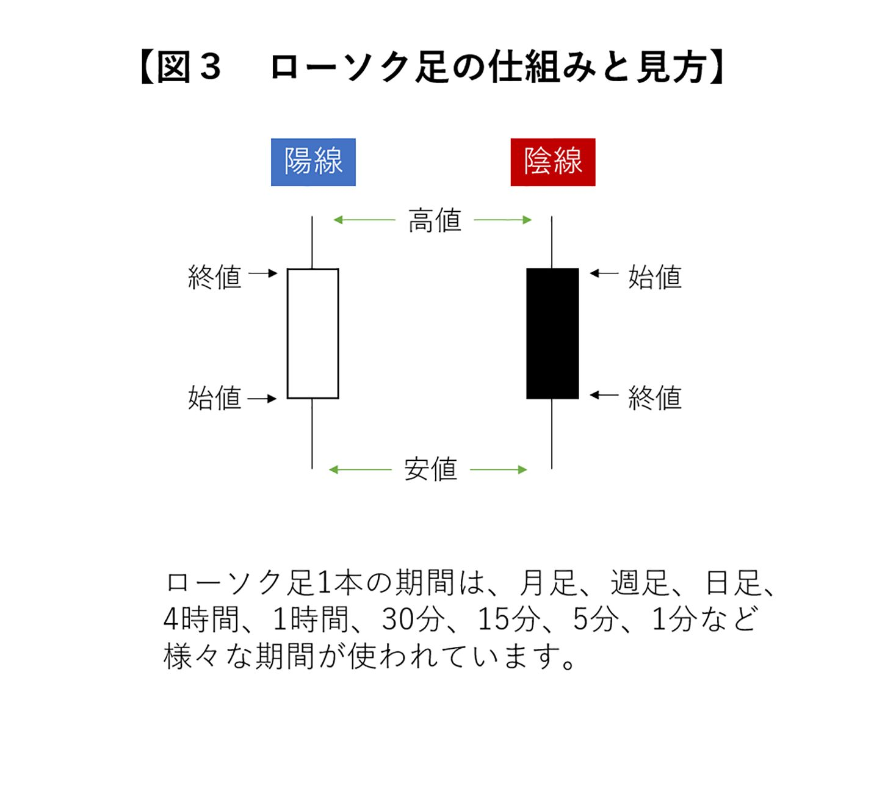
為替レートが上がっている時は陽線が多く、レートが下がっている時は陰線が多く出現します
。
ローソク足とチャートを使えば、今相場がどの方向に向かっているのかが見えてきます
。
少し訓練が必要ですが、慣れてしまえば強い武器になります。
このチャートやローソク足を使った相場の把握の仕方について、これから紹介していきたいと思います。
ＦＸ取引をやる上で絶対にマスターしたいのが、「テクニカル分析」と「ファンダメンタルズ分析」です。
まず、ファンダメンタルズ分析とは、経済などの要因によってＦＸ相場にもたらされる影響を分析する手法です。
為替相場は、景気や物価、紛争などの要因によって常に変動しています。何か重大なニュースがあれば、必ず相場に影響してきます。
「このニュースの時は、相場はこう動く」といったパターンがあるので、それをマスターしておけば、利益を出せる確率が上がる
のです。
続いてテクニカル分析の話ですが、これはチャートやローソク足を使って相場の流れを掴む分析方法です。
相場は常に上昇し続けたり、下降し続けたりすることはありません。上がったり下がったりを繰り返しています。
過去何十年の相場を分析した結果、上がり出す時、下がり出す時には特定のパターンがある
ことが解明されています。
それをチャートやローソク足を使って分析することで、利益を得ることができるのです。
この、テクニカル分析とファンダメンタルズ分析は、どちらか一方だけをマスターすればいいというものではなく、両方を習得する必要があります。
そして、それらの情報を総合的に判断して投資を行うことで、高い確率で勝つことができる
のです。
基本的には、ファンダメンタルズ分析によって、相場の大きな流れを把握し、テクニカル分析で、ベストな注文のタイミングを計る
といった使い方をするのが一般的です。
では、具体的なテクニカル分析の手法について、いくつか紹介していきましょう。
テクニカル分析の中で最も有名なのが、移動平均線を駆使した分析方法です。
移動平均線とは、過去の一定期間の終値の平均値を線で結んだもの
です（図４）。
注目して貰いたいのが、ローソク足が移動平均線から離れすぎると、必ず移動平均線に近い値に戻ろうとする働きがある
ということです。
この性質を知っているだけでも、「そろそろ上がるかな？」「そろそろ下がるかな？」ということを把握できるはずです。
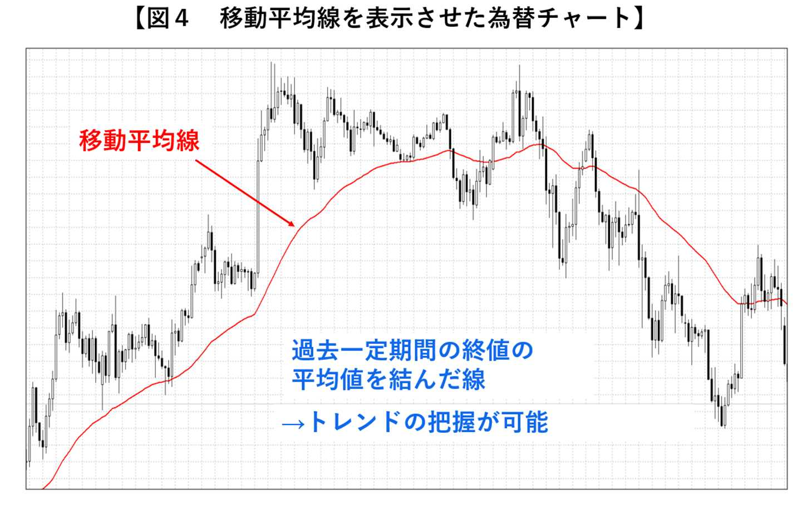
より明白に、売り買いのタイミングを知るために覚えておきたいのが、「グランビルの法則」です（図５）。
移動平均線と現在の相場の関係性で、売買するタイミングをまとめた法則です。
グランビルの法則によると、買うタイミングは、①
、②
、③
、④
、売るタイミングは、⑤
、⑥
、⑦
、⑧
です。
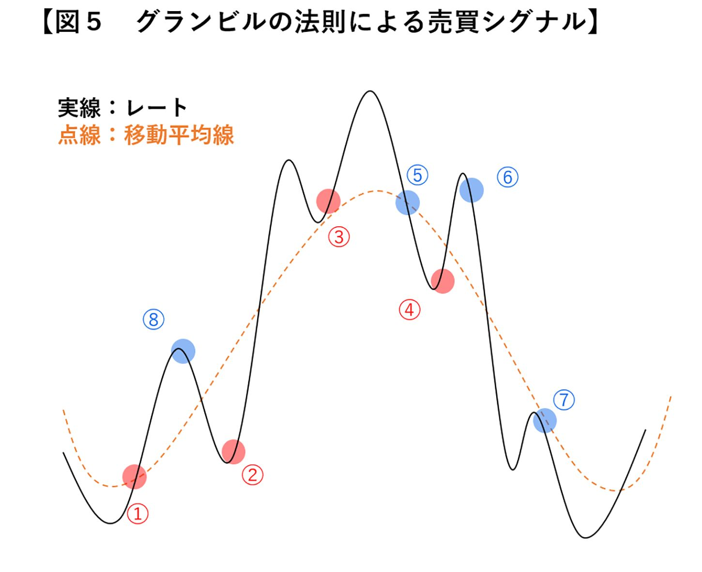
買うタイミングについて、詳しく見ていきましょう。
まずは①
のタイミングについての解説です。
もともと下向きであった移動平均線が、横ばいもしくは上向きになり、それをレートが上抜けた時です。これはトレンドが横ばいもしくは下降トレンドから、上昇トレンドに変わった
可能性を示唆しており、重要な買いのシグナルとなります。
もし、下向きの移動平均線を上抜けても、それはトレンド転換とは判断出来ないので注意が必要です。
続いては②
についてですが、上向きにある移動平均線から、レートが下に乖離し、その反発を狙ったものです。
移動平均線がしっかりと上向きであれば、相場はまだまだ上昇トレンドなので、一時的な価格調整と判断し、買いで入ることが出来ます
。
次に買いポイント③
ですが、移動平均線から上に乖離したレートが、移動平均線へ近づき、そこで反発したポイントを狙ったエントリーです。
これは、移動平均線は支持線・抵抗線としての役割を持っていることを利用したトレード手法
です。
最後は④
のポイントについてです。
下向きの移動平均線を、レートが大きく下へ乖離した時、その自律反発を狙ったトレードです。
これは、「グランビルの法則」では買いポイントとされていますが、下降トレンドの中、買いでエントリーするという逆張りの手法になりますので、かなりリスクが高い手法と言えます。
以上４つの「買い」のポイントについて紹介してきましたが、売りのポイントは「買い」の反対のポイントだと思ってください。
「グランビルの法則」は投資をする上では非常に基本的ですが、プロでも使用する法則です
。しっかり理解してから投資を開始しましょう。
ただ闇雲に取引するのではなく、こういった特性をしっかりと勉強した上で取引に臨むことで、計画的に利益を上げることができるのです。
移動平均線と同じ位よく使用する分析方法が、「トレンドライン」と呼ばれるものです。
まず前提として、相場には①
上昇トレンド、②
下降トレンド、③
横ばいがあります（図６）。
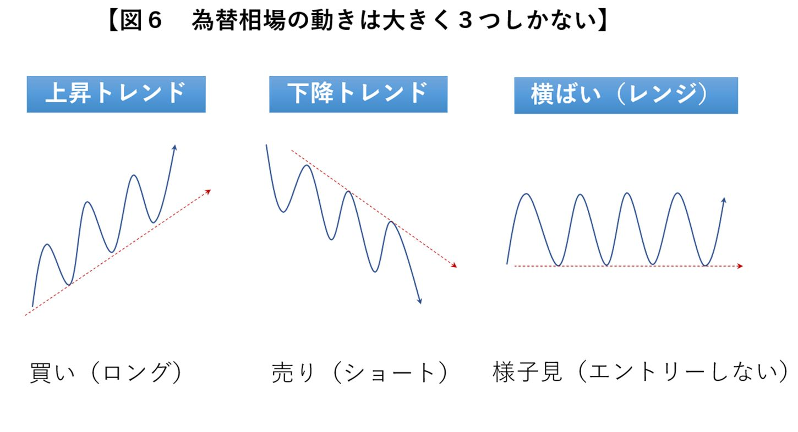
このトレンドを利用するために、始点と１点目を線で結んだものがトレンドラインです（図７）。
上昇トレンドであれば、このトレンドラインまで価格が下がった時に、再び上昇を始める傾向があるのでエントリーのチャンスとなります
。
この傾向は何回か継続して発生することが多いので、勝率を高めるのに非常に効果的です。
ただ、このトレンドラインを下回ってしまえば、トレンドの勢いが弱まり、場合によっては下降トレンドになる可能性もあるので、すぐに売る必要があります。これも過去のデータを分析した結果、解明されている事実です。
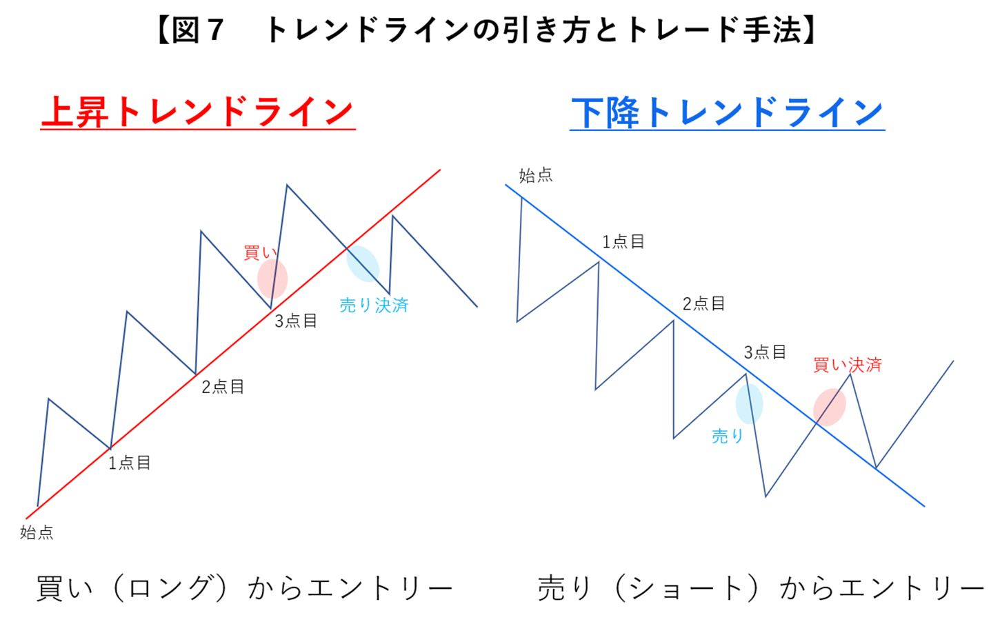
続いては、「水平線」を使った分析方法についてです。
相場はずっと上昇または下降ばかりしている訳ではありません。ある特定の範囲を上下することが多々あります。
その場合は、２本の「水平線」を使って分析すると効果的です。
安値と安値を結んだ線を「サポートライン」、高値と高値を結んだ線を「レジスタンスライン」と呼びます（図８）。
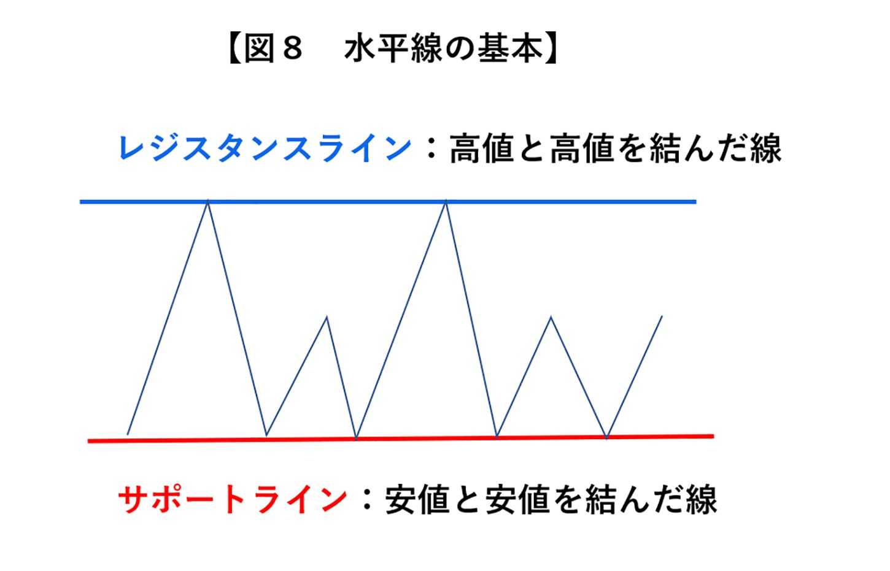
サポートラインまで下がってきたら、上昇に転換すると予測できますし、レジスタンスラインまで上昇すると、次は下がるだろうと予想することができます
。
ここまで移動平均線、トレンドライン、水平線の３つの手法を紹介してきました。どれも効果的な手法ですから、知っているだけで、勝率がかなり上がるはずです。
この書籍では、テクニカル分析の初歩について紹介してきましたが、私のブログではより詳しく動画付きで解説しています。
本屋に行って書籍を購入すればお金がかかりますが、私のブログはタダで見れますので是非活用してください。本屋の書籍を何冊か買うより、有益な情報が手に入るはずです。
本に費やすお金があれば、ＦＸの軍資金にした方がいいです。無料で手に入る情報は無料で手に入れてください。
＜
参考サイト＞
https://fx-megabank.com/technical-analysis/moving-average/
詳しいテクニックについてはブログで確認してほしいのですが、１つ注意点があります。
それは、ノウハウをたくさん知っていても、負ける人は負ける
ということです。
すごく絶望的なことを言いましたが、安心してください。失敗する人には特的のパターンが存在します
。失敗するべくして失敗しているのです。
そのパターンについて、いくつか紹介していきたいと思います。
ＦＸは勝ち方が分かってしまえば、勝つことは難しいことではありません。
しかし、いくら勝率が高くても、一度に大きく負けてしまっては結局マイナスになってしまいます
。
そこでまず、勝率について話をしていきたいと思います。
ＦＸの勝率は、「ＦＸの勝率＝勝ちトレード数÷
総トレード数」
で計算されます。
例えば10
回中３回勝てば、勝率は30
％
で、10
回中５回勝てば、勝率は50
％
となります。
ここで、１つ例を出して考えてみましょう。
１ドル＝１１０円50
銭でドルを新規で買ったとします。
１１０円70
銭まで上がるか、１１０円30
銭まで下がれば売るとします。
この場合、上げ幅と下げ幅が同じ20
銭なので、勝率は50
％
と期待できます。
では次に、１ドル＝１１０円50
銭でドルを新規で買ったとします。
１１０円60
銭まで上がるか、１０８円50
銭まで下がれば売るとします。
利益は10
銭上がるごとに確定し、損失は２００銭下がってようやく売るスタイルです。
この場合、勝率はどうなるでしょうか。
高確率で勝てそうですが、負けた時は大幅に損が出て、勝率90
％
が実現しても最終的にマイナスになります（図９）。
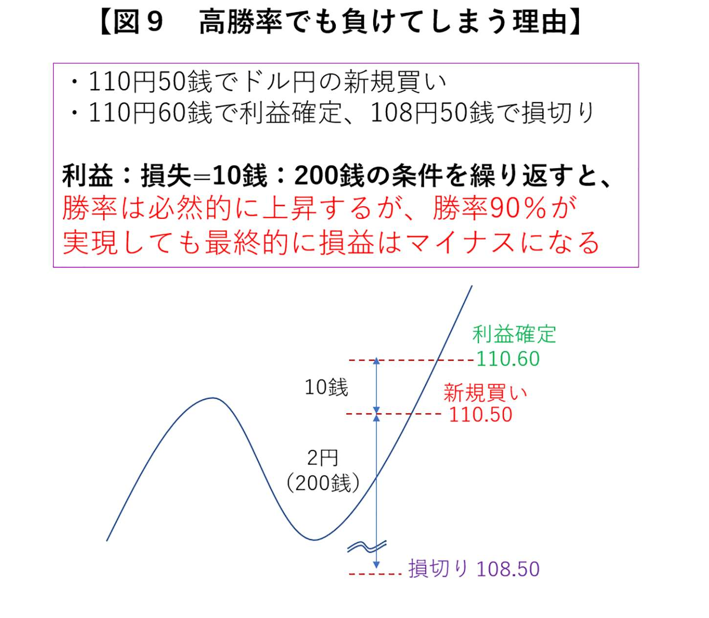
勝率90
％
でも負けてしまう理由がこれです。
「そんなこと普通ならないだろう」と思っているあなた。
実は、初心者が普通にトレードをすると、同じような失敗を普通はします。
すごくありきたりな失敗なのです。
「コツコツ、ドカン」と呼ばれ、「コツコツ利益を稼いで、ドカンと一発負ける」。初心者にありがちな失敗です。
人間、利益は早く確定したいものですが、損はなかなか受け入れられません。
「もう少ししたら上昇するに違いない」と根拠も無く相場が上昇するのを待つのですが、一度下がり出すとしばらくは下がり続けるのがトレンドというものです。
損失がどんどんと膨らんで、耐えられなくなって売るはめになります。
そうならないためにも、どれだけ利益が出たら売るのか、どれだけ損が出たら売るのかを、取引を始める前に明確に決めておく
必要があります。
では、安定して稼いでいくためには、どのように条件を設定しておけばよいでしょうか。
答えは簡単です。勝率ではなく、一度に大きく勝てるように条件を設定する
のです。
例えば、30
銭上がるか10
銭下がれば売るとします。この場合、例え勝率が40
％
であっても利益はしっかりと出ます（図10
）。
つまり、利益が出るかどうかは、勝率が高いかどうかでは無いのです。むしろ勝率が低い方がトータルで見た場合に利益がたくさん出るケースが多いです
。
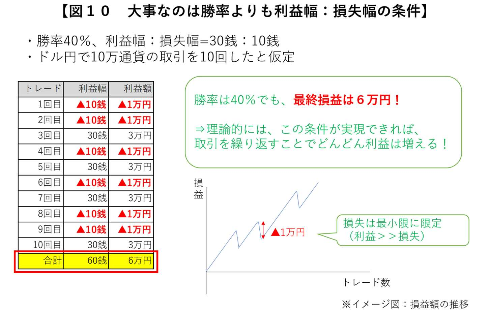
巷には、勝率90
％
と誇大広告とも取れるノウハウが溢れていますが、トータルで最終的に勝てなければ全く意味はありません。
一般的に、勝率を上げるということは利益が少なくなります
。逆に、勝率が下がると利益は大きくなる
傾向にあります。
ついつい勝率を上げたくなりますが、「利益＞
損失」となるようなトレードを心掛けることが重要です。
最終的に勝つためには、目先の勝率の高さに拘らず、大きな利益を狙うことが戦略として非常に重要になるのです。
初心者にありがちな「コツコツ、ドカン」について紹介しましたが、これには人間の本能が深く関係しています。
例を出して考えてみましょう。
今あなたは、ゲームをしていて２つの選択肢があるとします。
Ａは50
％
の確率で１万円が稼げますが、50
％
の確率で０円です。一方、Ｂは必ず４千円が稼げます。あなたはＡとＢのどちらの選択肢を選びますか（図11
）？
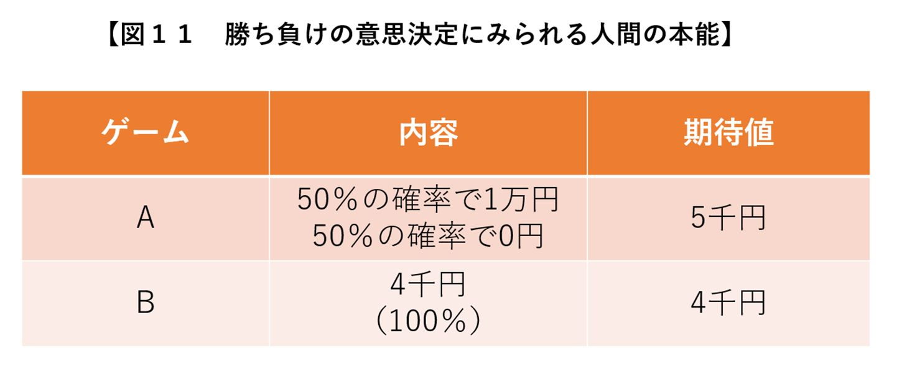
理論的には期待値が高いＡを選ぶべきですが、Ｂもノーリスクで４千円を手に出来ますので、このケースでは「どちらを選んでも問題なし」と言えるでしょう。
では、次のケースはどうでしょう。
Ａは50
％
の確率で１万円の損失がでますが、50
％
の確率で０円です。一方、Ｂは必ず４千円の損失が発生します（図12
）。
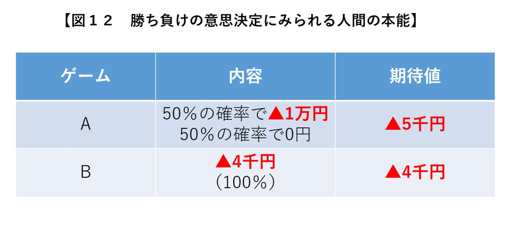
この場合、理論的には期待値の低いＢを選ぶべきです。しかしほとんどの人が「損失０」を狙ってＡを選んでしまいます。
人間は損をすることが大嫌い
です。
損が苦痛すぎて逃げ出したくなるのです。
しかしこの心理は、ＦＸの取引をする上で非常に危険です。
損をすることは普通に起こり得ることですから、うまく「損すること」と付き合っていかないといけません。
そうしないと損することが認められずに、ズルズルと損失が拡大してしまいます。
損をしても、「もう少ししたら反転して利益が出るはず」と根拠の無い妄想をせずに、被害が拡大する前に、損を確定させ、次の投資に移ることが重要
なのです。
人が損失を避けようとする理由は、「プロスペクト理論」という学術的に証明された理論が明らかにしています。
この理論によると、同じ金額の利益を得る時と損失を受ける時を比べると、損失の時の方がはるかに精神に及ぼす影響が大きい
とされています。
そのため、「利益確定は簡単に出来るけど、損切りは先延ばしにする」ということをしてしまうのです。
しかしこれは、相場の世界では致命的な特性です。
こういった人間の特性があることを十分に理解した上で、対策することが重要です。
具体的には、損がある程度出たら、自動的に損切りするように設定しておく
のです。
自分で損切りしようとすると、ついつい先延ばしにしがちですが、始めから設定しておくと強制的に決済できますから、損が拡大することはありません。
投資の格言の１つに、「最初に決めたルールは破らない」というものがあります。
いくら理論的に勝てる勝負でも、邪魔をするのは人間の心理
です。
「もうちょっとしたら」「今度こそ」「逆転するには」といった煩悩を捨てて、ルールに徹することが重要です。
ではもう少し、守らなければいけないルールについて紹介していきましょう。
破れば負けが確実！ と言っても過言ではない絶対遵守のルールが４つあります。
まず１つ目のルールは、「明確な根拠がない時はエントリー禁止」ということです。
これは、プロでもやってしまいがちですが、特に何でもない相場の時に手持ち無沙汰で投資をしてしまう人が多いです。
ベテランであれば、勘で勝つこともありますが、初心者のうちは、勝てるパターンの時のみに投資をすることが重要です。
何でもない相場でエントリーして負けてしまえば、それを引きずって、本来の投資スタイルを見失うこともあります。
大負けして、将来訪れるビックチャンスに怖じ気づいて投資できない可能性もあります。
相場の格言の１つに、「待つことは最善の選択肢である」
という言葉があります。
相場の状況がよく分からない時には、戦略的に休み、無駄な損失を避ける
ことも、勝つ上では非常に重要な心構えになります。
鉄則の２つ目は、「ナンピン買い・売りは原則禁止」です。
ナンピンとは、簡単に言えば追加で投資をすることです。
例えば、相場が下落して負けている時に、「もうじき、反転して上昇するから、ここで投資額を増やして反撃に備えよう」と考えて、投資額を増やす行為です。
最初に「１ドルを１００円」で購入し、追加で「１ドルを90
円」で買ったとすると、「２ドルの平均購入価格は95
円」です。追加で購入しなければ、最初の価格である１ドル＝１００円を超えないと利益は発生しませんが、追加で購入することで、平均購入価格が下がりますので、１ドル＝95
円を超えれば利益を出すことができます。
下落相場では、追加で購入すればするほど、平均調達コストは下がるので、相場が上昇に転じるとすぐに利益を出すことができるのです。
しかし、多くの場合相場は反転しません。
そうしているうちにどんどん損失が膨らみ、我慢できなくなって、「狼狽売り」をします。
そうしてやっと損切りできたと思った頃に、相場は反転し出すのです。相場に遊ばれているような気分になります。
勘で投資をすると、相場は自分の考えている反対の方向に動くと考えてください。
下がると思ったら上がる、上がると思ったら下がる。買うべき時に売ってしまい、売るべき時に買ってしまう。
投資の初心者がルールに乗っ取って投資をしないと、こうなります。
ルールの３つ目は、「エントリー時に、どれだけ損が出たら売るかを必ず設定」することです。
この鉄則は、繰り返しの説明になりますが、一番重要と言ってもいいくらいのルールですから、念押ししておきます。
人は、損切りできない性質があります。その性質を理解した上で、損切りのタイミングを予め決めておく
ことが重要です。
そして、相場は急に動くことがあることも忘れてはいけません。
例えばテロや地震が起こって、相場が急激に下落することだって考えられます。ちょっとした隙に莫大な損失を被る可能性だってあるので、許容できる損失は予め決めておくことが重要です。
ＦＸはレバレッジの効果で、自己資金の25
倍の投資を行うことができます。それはＦＸの最大のメリットと言っても過言ではありませんが、リスクも少なからずあります。
利益も25
倍になりますが、損が出た場合も25
倍ということです。
手持ちの資金が、一瞬にして消えてしまうことだってあるのです。
そうならないためにも、損切りの価格はしっかりと設定しておき、リスクを最小限に留めることが重要なのです。
最後のルールは、「負けた時こそ冷静になり、投資額を倍にすることは厳禁」ということです。
ＦＸでは、感情を乱された時点で負け確実
です。
トレードをしていてすぐに熱くなり、負けたら投資額を増やす投資手法では、大きく負ける可能性が高くなります。
トレーディングにおいて、怒りはマイナス以外の何でもなく、百害あって一利なし
です。
もし自分が冷静なトレードが出来ていないな、と感じた時は、すぐにトレード画面をシャットダウンし、その日は相場から離れるなどのルールを作りましょう。
第４章の内容についても、ブログでは動画を使ってより詳しく紹介しています。
本書では、簡単な用語で説明するように心がけていますが、ブログの方では、専門用語を使い論理的に説明しています。
本書で概要を知り、ブログでより詳しく知ることで、知識が深まります。是非ご活用ください。
＜
参考サイト＞
https://fx-megabank.com/fx-basic/trap-of-winning-percentage/
投資で稼ぎ続ける人が大切にしていることは、ルールを守り続けているということです。
それはつまり、根拠の無いところで自分の感覚で投資をしない
ということです。
先人が失敗を繰り返して確立したルールを破ってしまっては、成功する確率が低くなってしまうことは当然のことです。
いかに基本に忠実にトレードできるか。これが投資で勝つための秘訣
です。
そして、ノウハウはできるだけ信用のある人に教えて貰った方が、投資の上達するスピードも早くなります
。
巷には怪しげなノウハウが散乱しています。専門的な知識が無いにも関わらず、「絶対に勝てる投資法」といった、聞こえの良いノウハウを高額で販売し、利益を上げている人間がいます。そういったノウハウを信用して取引しても、利益を上げることは難しいので惑わされてはいけません。
あなたが本当に投資で成功したいのであれば、誰か信用できる人に正しい知識を教えてもらうことが重要です。
そして、そのノウハウ通りに投資できているかどうかの「指導」
を受けることを、おすすめします。
よく、ノウハウだけあれば自分で成功できると思っている人がいますが、それではなかなかうまく取引できるようにはなりません。
サッカーの本を読んだだけでは、実際にうまくプレーできないのと同じです。
理論的に正しいことがわかっていても、それを何度も練習し、間違っていることを指摘してもらえる環境でないと、なかなか上達しません。
オリンピックに出ている人でも、必ずコーチがいます。
オリンピックに出るような人ですから、基本的な技術はあるはずです。それでも、練習しているうちに間違ったフォームがついてしまうことがあるので、チェックしてもらえる環境を自ら作っているのです。
それぐらい指導を受けるということは、何かを上達する上で欠かせない要素
なのです。
もちろん、中には、指導を受けずに上達する人はいます。
その代わり、投資する中で損失を被っています。つまり、投資する中で高い「授業料」を払って、自分で学んでいくタイプです。
学んでいければいいのですが、多くの人は途中で挫折してしまいます。大きな損失が出ることで投資が怖くなったり、挽回しようと怪しげなセミナーに手を出したりしてしまいます。
そんな大きなリスクを背負ってまで、独学にこだわる理由は乏しいでしょう。
後から損失を被らないためにも、始めから信用できる人にしっかりとした知識やスキルを教えてもらった方が、はるかに安い授業料で技術を習得できる
ようになります。
何でもそうですが「できる人」というのは、自分が何かできるようになることにお金を使っています
。自己投資と言われるものです。
逆に「できない人」は、自己投資にお金を使いません。
あなたが「できる人」になりたいのであれば、何かを学ぶためにお金を使うことを惜しまないでください。
あなたは自己投資できていますか？
知らないうちに、「できない人」のお金の使い方になっていませんか？
成功している人は、お金がお金を生むようなお金の使い方をしています。
遊ぶことだけにお金を使ってしまわないということです。
車を買ったり洋服を買ったりすることも大切ですが、車や服は将来お金を生みません。
将来お金を生むようなお金の使い方が、重要です。
それが、自己投資です。
自己投資というのは、英語を学びに教室に通ったり、大学に勉強しに行ったりすることも含みます。
みんな、語学を身に付けたり、技術を習得することには、お金を払って学ぼうとします。
しかし、多くの人は、お金を稼ぐための自己投資をしようとしません。
タダで情報を仕入れて、その情報だけで自分でお金を稼ごうとしてしまいます。
しかし、タダで得ることができる情報というものは、タダの価値しかないものがほとんど
です。
そんな情報で、果たして成功なんてできるでしょうか？
しっかり自己投資をして、有益なノウハウだけを知って、正しい方法で勝つ方が、結局のところ得をします
。
成功者は、自己投資を惜しみません。それ以上のリターンがあると知っているからです。そして自己投資をしないと、後で損をすることも知っています。
あなたも成功したいのであれば、成功者の考え方を真似してみてください。
それが成功への一番の近道です。
あなたに真似して欲しい成功者の特徴が、もう１つあるので紹介します。
成功する人は、「まずはやってみる」という人が非常に多いです。
成功できない人は、始めるまでに時間がかかります。そうしているうちにチャンスを逃してしまうのです。
もちろんＦＸは無くなるものではないので、１年後でも10
年後でも始めることはできます。
しかし、今始めない人は、絶対１年後も10
年後も始めない
でしょう。
ＦＸは少額資金でも投資できることにメリットがありますし、最初からいきなり大きなお金を使った投資は、私もおすすめしていません。
慣れて利益を出せる技術を習得してから、投資の金額を増やすことができます。
とにかく始めることが重要です。
始めないと何も前進しません。
一生貧乏なままでいますか？
まずはとにかく始めてみてください。
それが大きな成功へと繋がるはずです。
繰り返しにはなりますが、「絶対勝てる方法！」「ほったらかして自動で稼ぐ！」などといった怪しげな情報に惑わされては、絶対に勝てません。
ヘッジファンドや機関投資家などのプロがひしめきあう世界で、素人同然の人が教えているような手法では、全く通用しないのです。
私は大手メガバンクの本店及び香港支店にて為替ディーラー業務を経験後、投資家として独立しました。
プロの経験があるからこそ、プロと素人の差を知っているのです。
プロは毎日、投資のことだけを考えて生きています。そんな世界で小手先だけの素人の手法が通用するわけもありません
。
それにも関わらず、素人のノウハウを鵜呑みにしてしまう人が勝てるでしょうか？
多くの方が、結局思ったような成果が出ずに、後悔をすることになっています。
そのような投資教育に関する状況を変え、専門的知識を持ったプロが正しい金融投資教育を実現するという志のもと、私はブログ等でＦＸの情報発信を行っております。
少しでも多くの人に正しい「プロのノウハウ」をお伝えして、投資で成功してほしいと思っています。
本書の途中で何度かブログの紹介をしましたが、是非そちらをご活用ください。ブログでは、紙面の関係上、本書ではお伝えしきれなかった役に立つ情報を濃縮しています。
また、メルマガの発行もしておりまして、メルマガ登録者限定で専用の会員サイトにて50
本以上のＦＸの動画講座を観ることができる特典もありますので、こちらも是非活用していただければと思います。
多くの読者様から、
「他の35
万円の有料スクールよりも断然勉強になりました！」
「もっと早くこの教材に出会いたかったです......」
「無料でここまでクオリティーが高いコンテンツは見たことがありません！」
「今まで一番分かりやすい教材でした！」
などと絶賛されており、今でも連日のように、読者様から感謝のメッセージが寄せられております。
＜
メルマガ登録はこちら＞
https://fx-megabank.com/lp/ftc01/
情報はできるだけ多く発信していますので、少しでも多く吸収して、勝利をつかみ取っていただければ幸いです。
投資は誰でも簡単に始めることはできますが、誰でも簡単に勝てるものではありません。
しかし、幸いなことに、本書を読んでくださった方は、巷の間違った情報は危険だと知ることができたと思います。
正しい手法を身に付けて、勝てるようになる第一歩を踏み出すことができたのです。
是非、あなたも投資で成功して、自由なお金と時間を手に入れることを目指していきましょう。
最後までお読みいただきありがとうございます。
ここまで読んだあなたは、ＦＸを始める上では十分な知識を得たと言えます。
ただし、勝つために十分な知識を得たというわけではありません。
本書は、ＦＸの入門書として、少しでも多くの人にＦＸに興味を持って貰おうと、できるだけ簡単に、そして専門用語も極力少なくなるよう執筆しています。
これから、「本格的にＦＸの勉強をしたい」「絶対に勝ちたい」と思う方は、私のブログに来てみてください。
より詳しく、専門的な内容を知ることができます。
また、分からない事がある人や、より効率的に勝つ方法を知りたいという人がいましたら、直接連絡いただけると私の方で回答させていただきます。
＜
お問い合わせ先＞
https://fx-megabank.com/contact/
できるだけ多くの人にＦＸで勝ち続けて貰いたいと思っているので、そういった志の高い方は大歓迎です。
ＦＸで自由な未来を切り開いていきましょう！
鈴木 拓也
鈴木 拓也（すずき たくや）
投資家／実業家
株式会社フィンテラス 代表取締役
公益社団法人 日本証券アナリスト検定協会会員
１９８７年生まれ、静岡県出身。
明治大学理工学部卒業。東京工業大学大学院修士課程修了（電子工学専攻）。
大手メガバンクの本店及び香港支店にて為替ディーラー業務を経験後、投資家兼起業家として独立。
日本における金融リテラシーの向上を目標に、ＦＸを中心とした投資に関する情報発信を実施。現在は、ＦＸスクールを運営する他、ＩＴを使ったＷｅｂマーケティングなど幅広い事業を展開する。
タイトル 元メガバンク為替ディーラーが教えるＦＸ超入門講座
発行日 ２０１８年９月１日
著 者 鈴木拓也
本書の全部あるいは一部をコピー、スキャン、デジタル化する無断複製は、著作権法上での例外である私的利用を除き禁じられています。本書を代行業者等の第三者に依頼してコピー、スキャンやデジタル化することは、たとえ個人や家庭内での利用であっても一切認められていません。
©２０１８ Takuya Suzuki